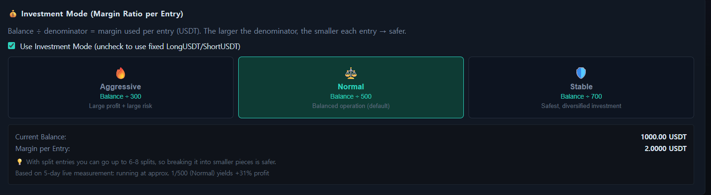
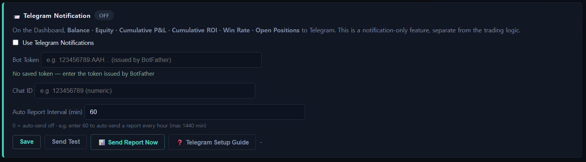
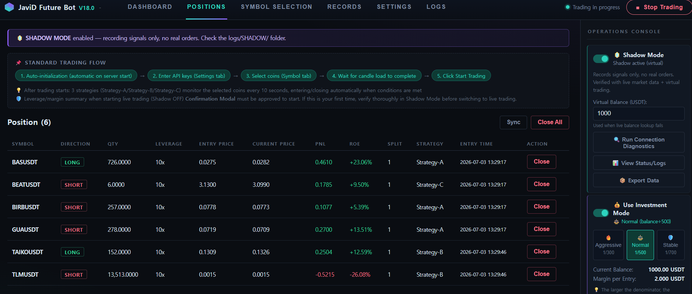

1
First Launch — Guided Onboarding

New users are walked through the 4-step setup flow the moment the app opens, plus a safety checklist (leverage, confirmation modal, one-bot-per-account) before they can ever go live.
Nine actual screens from the app, in order — from first launch to live Shadow Mode positions. No mockups, this is exactly what you'll see.







Free download, runs 100% locally — your keys never leave your PC.
⬇ Back to JaviD Future Bot